“Statistics is the grammar of science.” - Karl Pearson
The notes below are modified from the freely available online book Applied Statistics with R.
Question: What will you do when get a new dataset before analyzing it?
R has built-in functions for a large number of summary statistics. For numeric variables, we can summarize data with the center and spread. We have covered many of the summary functions, make sure you understand what the following functions return: mean(), median(), range(), max(), min(), sd(), var(), IQR(), summary(). Pay attention to data sets containing NA values.
Recall the Keeling_Data, call the above functions:
library(dplyr)
Keeling_Data <- read.csv(file = "co2_mm_mlo.csv", header = T)
Keeling_Data_tbl <- as_tibble(Keeling_Data)
# Add a new column to the original tibble
Keeling_Data_tbl <- Keeling_Data_tbl %>%
mutate(co2_new = ifelse(quality==1, co2, NA))
# Notice we use pull() to get a vector from a tibble
Month_CO2 <- Keeling_Data_tbl %>%
pull(co2_new)
# Summary and descriptive statistics
mean(Month_CO2, na.rm=T)## [1] 355.6515## [1] 352.98## [1] 313.20 417.07## [1] 28.74672## [1] 826.3739## [1] 49.4675## Min. 1st Qu. Median Mean 3rd Qu. Max. NA's
## 313.2 329.4 353.0 355.7 378.8 417.1 7Now we have some data to work with, and we have learned about the data at the most basic level, our next task is to visualize the data. Often, a proper visualization can illuminate features of the data that can inform further analysis. We will look at four methods of visualizing data.
When visualizing a single numerical variable, a histogram will be our go-to tool, which can be created in R using the hist() function.
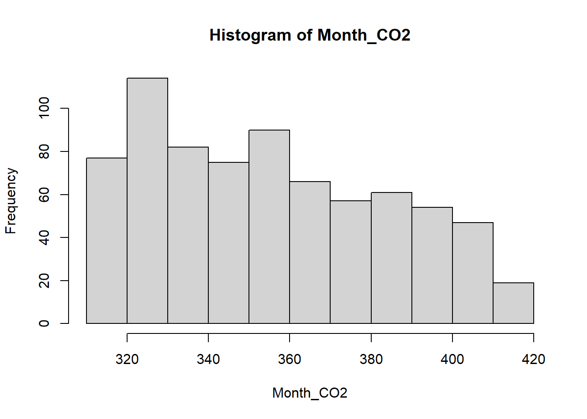
The histogram function has a number of parameters which can be changed to make our plot look much nicer. Use the ? operator to read the documentation for the hist() to see a full list of these parameters.
hist(Month_CO2,
xlab = "Monthly CO2 mixing ratios (ppm)",
main = "Histogram of Monthly CO2",
breaks = 20,
col = "blue",
border = "red")
box(lwd=2,col="green")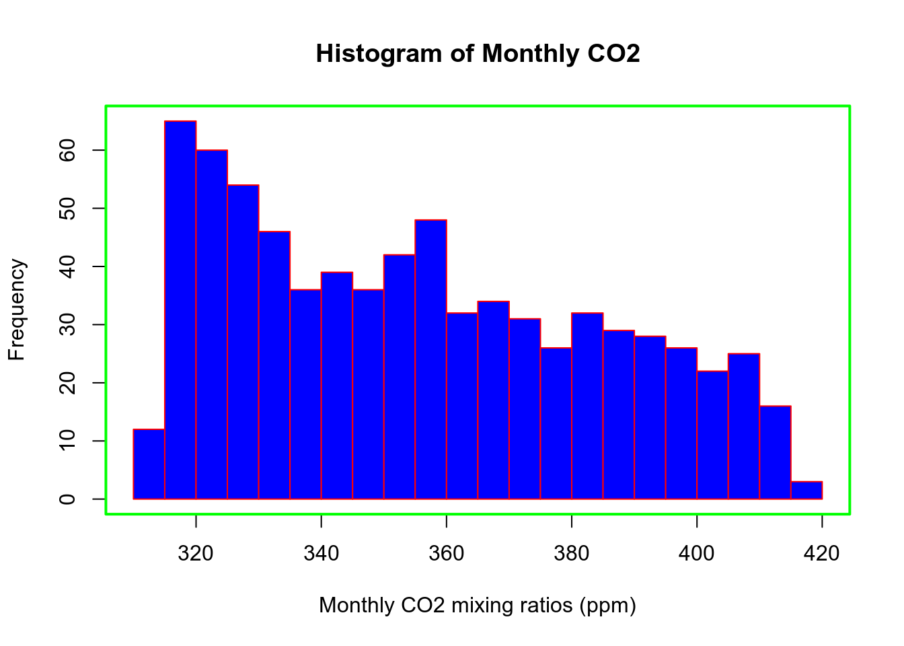
By default R will attempt to intelligently guess a good number of breaks, but as we can see here, it is sometimes useful to modify this yourself.
Somewhat similar to a histogram, a barplot can provide a visual summary of a categorical variable, or a numeric variable with a finite number of values, like a ranking from 1 to 10.
barplot(table(Keeling_Data_tbl$month),
xlab = "Month",
ylab = "Frequency",
main = "Number of observations",
col = "dodgerblue",
border = "darkorange")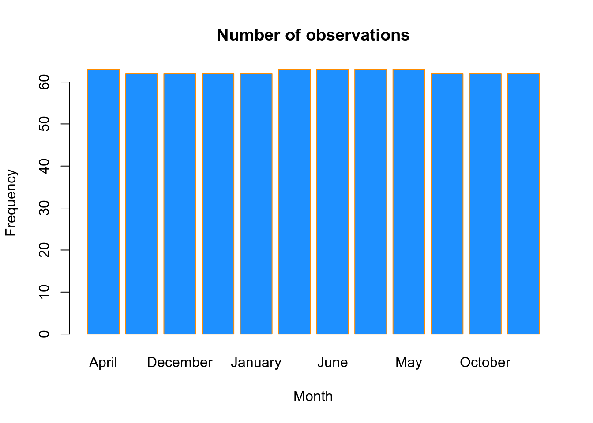
To visualize the relationship between a numerical and categorical variable, we will use a boxplot. In the Keeling_Data_tbl dataset, the month is a categorical variable. First, note that we can use a single boxplot as an alternative to a histogram for visualizing a single numerical variable. To do so in R, we use the boxplot() function.
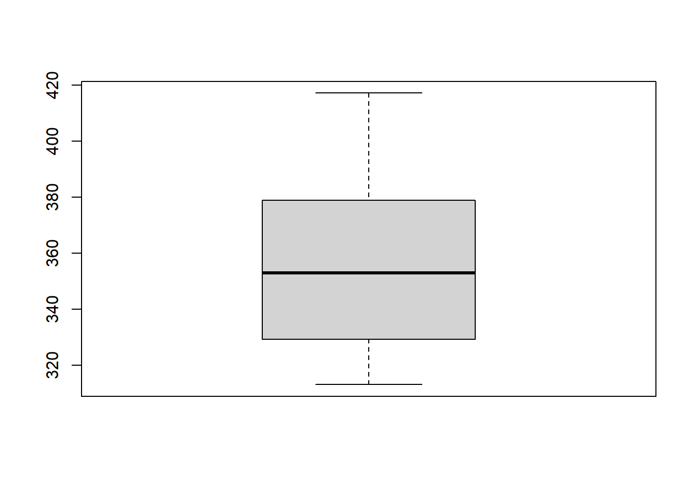
Or try to plot the raw data:
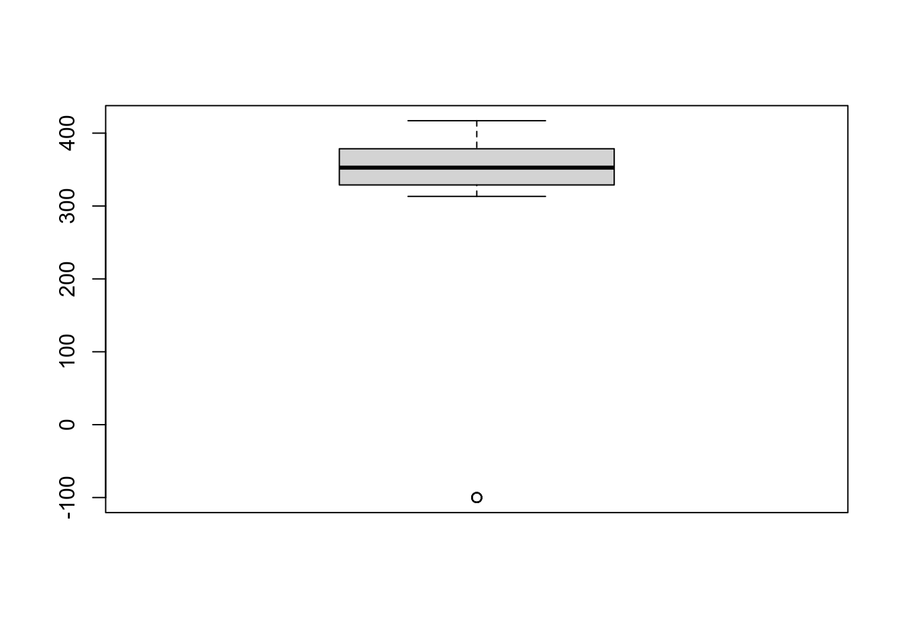
However, more often, we will use boxplots to compare a numerical variable for different values of a categorical variable.
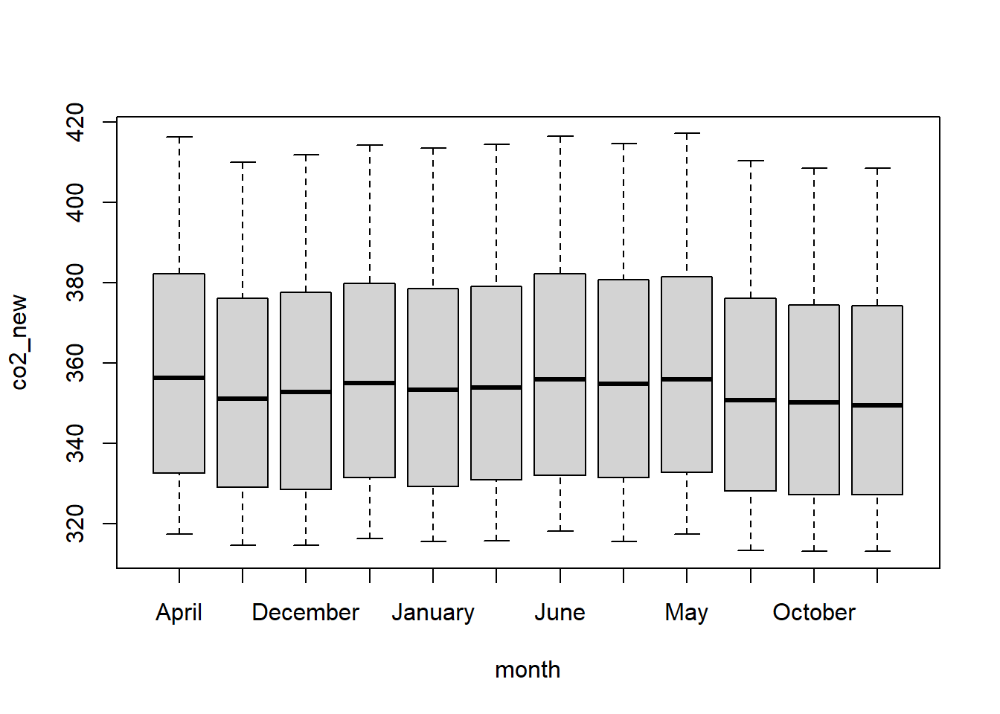
Here we used the boxplot() command to create side-by-side boxplots. However, since we are now dealing with two variables, the syntax has changed. The R syntax co2_new ~ month, data = Keeling_Data_tbl reads “Plot the co2_new variable against the month variable using the Keeling_Data_tbl dataset.” We see the use of a ~ (which specifies a formula) and also a data = argument. This will be a syntax that is common to many functions we will use later.
Again, boxplot() has a number of additional arguments which have the ability to make our plot more visually appealing.
boxplot(co2_new ~ month, data=Keeling_Data_tbl,
xlab = "Month",
ylab = "CO2 (ppm)",
main = "Monthly CO2",
cex = 2,
col = "orange",
border = "darkgreen")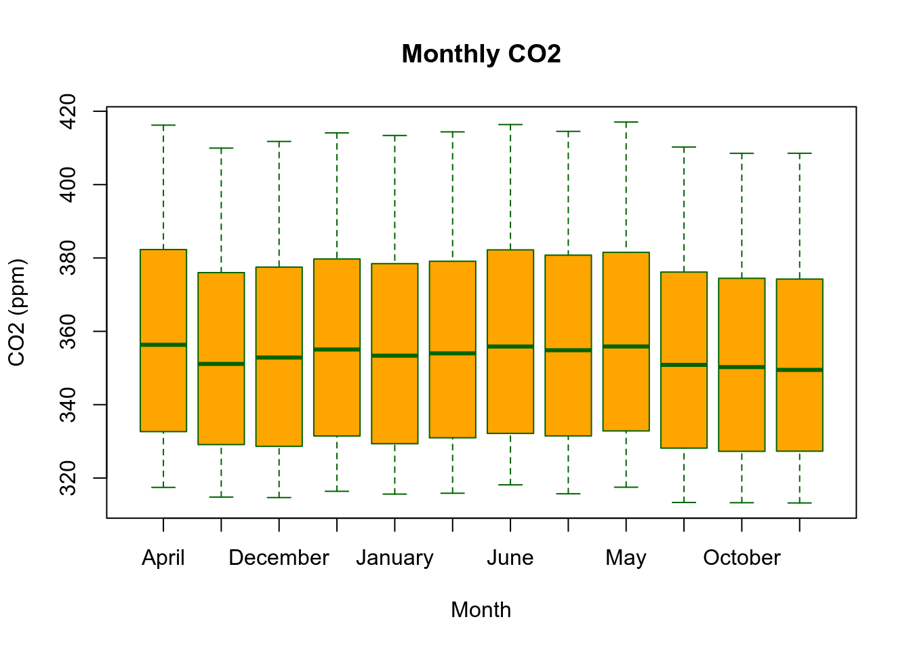
Lastly, to visualize the relationship between two numeric variables, we will use a scatterplot. This can be done with the plot() function and the ~ syntax we just used with a boxplot. (The function plot() can also be used more generally; see the documentation for details.)
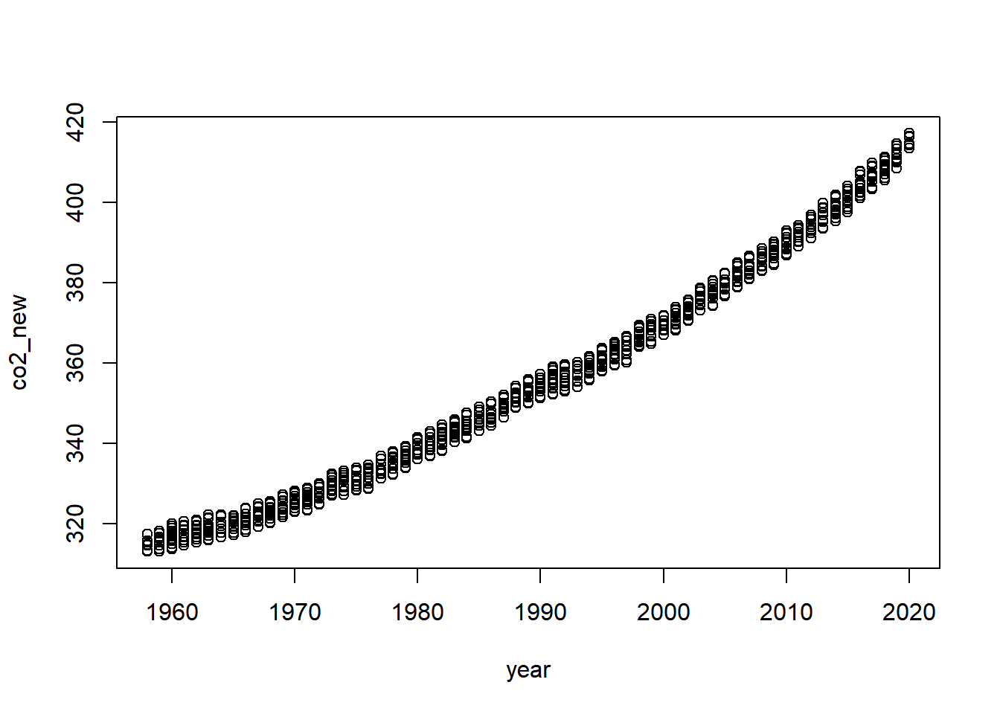
plot(co2_new ~ year, data=Keeling_Data_tbl,
xlab = "Year",
ylab = "CO2 (ppm)",
main = "CO2 vs Year",
pch = "+",
cex = 2,
col = "navy")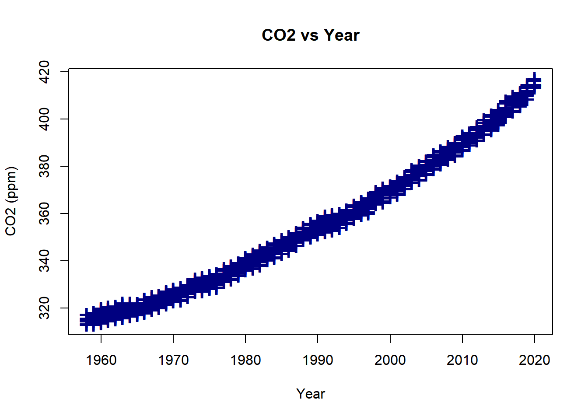
When working with different statistical distributions, we often want to make probabilistic statements based on the distribution.
We typically want to know one of four things:
R has functions for obtaining density, distribution, quantile and random values.
The general naming structure of the relevant R functions is:
dname calculates density (pdf) at input x.pname calculates distribution (cdf) at input x.qname calculates the quantile at an input probability.rname generates a random draw from a particular distribution.Note that name represents the name of the given distribution. For example, consider a random variable X which is \(N(\mu=2, \sigma^{2}=25)\). To calculate the value of the pdf at x = 3, that is, the height of the curve at x = 3, use:
## [1] 0.07820854To calculate the value of the cdf at x = 3, that is, \(P(X<=3)\), the probability that X is less than or equal to 3, use:
## [1] 0.5792597Or, to calculate the quantile for probability 0.975, use:
## [1] 11.79982Lastly, to generate a random sample of size n = 5, use:
## [1] 2.8913098 0.3319701 12.9295947 -0.9252186 2.6929464These functions exist for many other distributions, including but not limited to:
binom for Binomial distributiont for t distributionpois for Poisson distributionf for F distributionchisq for Chi-Squared distributionNotice each distribution will have its own set of parameters which need to be passed to the functions as arguments.
Correlation describes how closely related two variables are. Pearson’s test assumes your data is normally distributed and measures linear correlation. Spearman’s test does not assume normality and measures non-linear correlation. And Kendall’s test also does not assume normality and measures non-linear correlation, and is a more robust test - but it is harder to compute by hand, and as such is less commonly seen.
In R, cor(Vector1, Vector2) provides correlation coefficients, while cor.test(Vector1, Vector2) performs the statistical test, giving test statistics, p values, and other outputs. Both perform the Pearson test by default, but can be changed by providing the argument method = "spearman" or method = "kendall".
Let’s generate two random samples, both with a size of n = 50 from the \(N(\mu=0, \sigma^{2}=25)\) distribution, and use different tests:
Sample1 <- rnorm(n = 50, mean = 0, sd = 5)
Sample2 <- rnorm(n = 50, mean = 0, sd = 5)
# perform the Pearson test by default
cor(Sample1, Sample2)## [1] 0.08642683## [1] 0.08642683## [1] -0.01906363## [1] -0.01387755##
## Pearson's product-moment correlation
##
## data: Sample1 and Sample2
## t = 0.60103, df = 48, p-value = 0.5506
## alternative hypothesis: true correlation is not equal to 0
## 95 percent confidence interval:
## -0.1966517 0.3562054
## sample estimates:
## cor
## 0.08642683The t-test is a method of comparing the mean(s). For one-sample t-test, the null hypothesis is the sample mean equals to a fixed value. For example, let’s generate a random sample of size n = 50 from \(N(\mu=0, \sigma^{2}=25)\), and use t-test to check whether the mean is sigificantly different from zero.
##
## One Sample t-test
##
## data: Sample
## t = -0.86496, df = 49, p-value = 0.3913
## alternative hypothesis: true mean is not equal to 0
## 95 percent confidence interval:
## -2.2329728 0.8891532
## sample estimates:
## mean of x
## -0.6719098Two-sample t-test is almost the same as one-sample t-Test, but now the null hypothesis changes. Let’s generate two random samples, both with a size of n = 50 from the \(N(\mu=0, \sigma^{2}=25)\) distribution, and use t-test to check whether the means are sigificantly different.
Sample1 <- rnorm(n = 50, mean = 0, sd = 5)
Sample2 <- rnorm(n = 50, mean = 0, sd = 5)
t.test(Sample1, Sample2)##
## Welch Two Sample t-test
##
## data: Sample1 and Sample2
## t = -0.61684, df = 94.628, p-value = 0.5388
## alternative hypothesis: true difference in means is not equal to 0
## 95 percent confidence interval:
## -2.494913 1.312099
## sample estimates:
## mean of x mean of y
## -0.07018395 0.52122316You can use t.test() to test independent or paired samples, use ? to see more.
This is the most used statistical model in all fields - simple but powerful. We first fit the model using lm() then use summary() to view the results in greater detail.
x <- rnorm(n = 50, mean = 0, sd = 5)
a <- rnorm(n = 50, mean = 1, sd = 0.5)
b <- rnorm(n = 50, mean = 0, sd = 5)
y <- x * a + b
plot(x,y)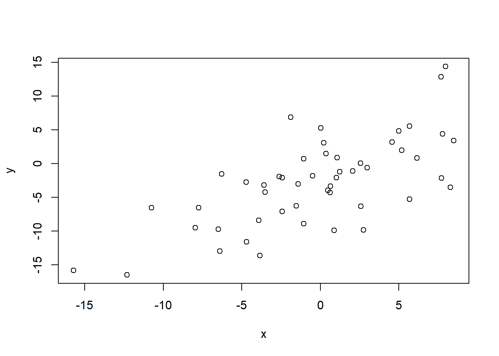
##
## Call:
## lm(formula = y ~ x)
##
## Residuals:
## Min 1Q Median 3Q Max
## -7.2235 -3.2276 0.0694 2.1031 13.3131
##
## Coefficients:
## Estimate Std. Error t value Pr(>|t|)
## (Intercept) -1.0461 0.6533 -1.601 0.116
## x 1.0171 0.1253 8.118 1.46e-10 ***
## ---
## Signif. codes: 0 '***' 0.001 '**' 0.01 '*' 0.05 '.' 0.1 ' ' 1
##
## Residual standard error: 4.607 on 48 degrees of freedom
## Multiple R-squared: 0.5786, Adjusted R-squared: 0.5698
## F-statistic: 65.9 on 1 and 48 DF, p-value: 1.463e-10You can extract the regression information directly with the names() function:
## [1] "call" "terms" "residuals" "coefficients" "aliased" "sigma" "df" "r.squared"
## [9] "adj.r.squared" "fstatistic" "cov.unscaled"## Estimate Std. Error t value Pr(>|t|)
## (Intercept) -1.046144 0.6533300 -1.601248 1.158836e-01
## x 1.017130 0.1252965 8.117785 1.462588e-10As you can see, the names() function tells us what information is available, and then we use the $ operator and coefficients to extract the information we are interested in.
We can plot the regression line by:
plot(y ~ x,
xlab = "x",
ylab = "y",
main = "y vs x",
pch = 20,
cex = 2,
col = "grey")
abline(fit, lwd = 5, col = "red")
points(mean(x), mean(y), pch = "+", cex = 3)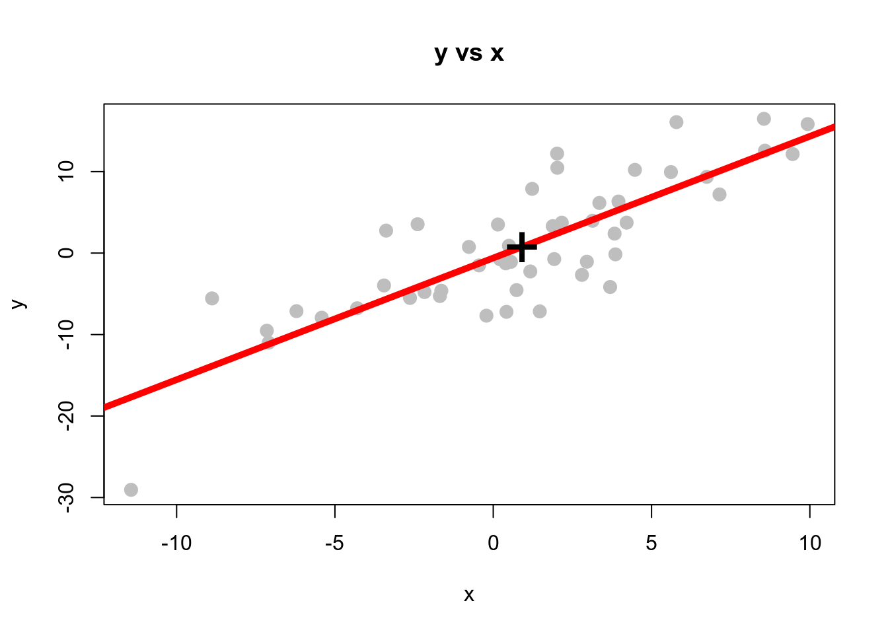
Please go over the notes once again, make sure you understand the scripts.
2.1 Use the two-sample t-test to determine how does the mean CO2 of 1958-1990 compare with that of 1991-2020. Report the mean change and 95% confident intervals.
2.2 Use the simple linear regression to compute the annual increase rate of CO2. Report the mean rate and 95% confident intervals. Ignore the seasonality for now.
One of the most important theorems in all of statistics is called the Central Limit Theorem or the Law of Large Numbers.
It states that given a sufficiently large sample size from a population with a finite level of variance, the mean of all samples from the same population will be approximately equal to the mean of the original population.
Furthermore, as you increase the number of samples and the sample size, the distribution of all of the sample means will approximate a normal distribution even if the original variables themselves are not normally distributed.
Can you demonstrate the two statements using R?